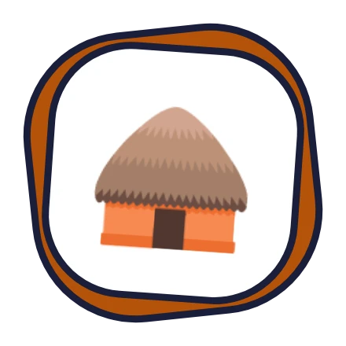

집 짓는 건축가
잘 곳이 있어야 마음이 놓이는 사람
내 선택이 가리킨 생존 유형
당신은 막막한 상황에서 먼저 터를 잡아요. 그늘막을 치고, 벽을 세우고, 비 새는 곳을 고치죠. 돌아올 곳이 생기면 다른 일은 그다음에 풀린다고 믿어요. 다만 짓는 데 몰두하다 보면 섬 밖으로 나갈 생각을 한참 잊어요.
이런 특징이 있어요
- 이사하면 정리부터 끝내야 잠이 옴
- 손으로 뭔가 만들고 고치는 걸 좋아함
- 기반이 잡혀야 다음 일을 시작함
터를 잡는 사람
불안할 때 사람은 기댈 곳을 찾아요. 당신은 그걸 직접 만드는 사람이에요. 당신이 지은 지붕 아래에서 다른 사람들도 비로소 잠을 자요.
평소의 나는
새 일을 맡으면 책상과 파일 정리부터 하는 사람이에요. 준비가 탄탄해서 뒷심이 좋아요. 다만 준비가 덜 돼도 일단 나가 보는 날을 가끔 만들어 보세요.
"오래 있어도 괜찮게 집을 제대로 짓자."
같이 떨어지면 든든한 사람은?
⚠️ 이 결과는 재미로 즐기는 콘텐츠예요. 전문적인 심리 진단이 아니에요.